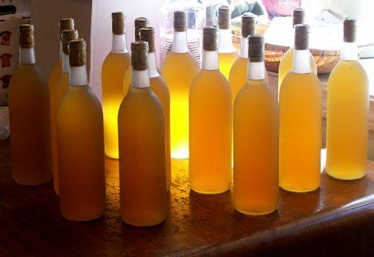
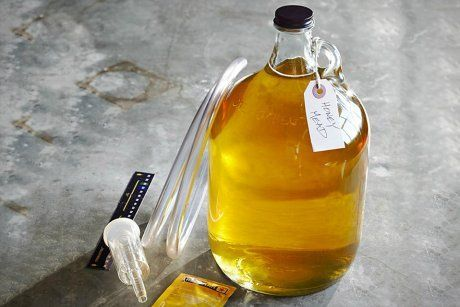

shutterstock.com
Медовуха – ароматный слабоалкогольный напиток, известный с давних времен. Готовят ее из меда, воды, по желанию добавляют различные специи. Смотрите нашу подборку несложных проверенных рецептов домашней медовухи, готовьте и зовите гостей на дегустацию!
О том, как сделать медовуху в домашних условиях, знают немногие. Разве только в деревнях старинные рецепты этого бодрящего слабоалкогольного напитка передаются из поколения в поколение. Приготовление напитка из меда – весьма увлекательный процесс, похожий на изготовление домашнего хлебного кваса.
Чтобы самостоятельно заготовить медовуху, используйте натуральный свежий жидкий мед. Можно экспериментировать с сортами и использовать липовый, гречишный или дикий лесной мед. Дрожжи для медовухи лучше взять свежие прессованные, предназначенные для выпечки хлеба, но и сухие нисколько не испортят напиток. По желанию, для придания готовому напитку интересного аромата, можно добавить пряности – корицу, имбирь, кардамон, цедру цитрусовых, мяту.
Некоторые рецепты приготовления медовухи предполагают использование шишек хмеля. Их еще можно найти на некоторых приусадебных участках – это вьющееся растение густо оплетает заборы и цветет привлекательными шишечками светло-зеленого цвета. Их можно собрать, высушить и использовать для заготовки напитка. Однако проще купить готовый высушенный хмель в аптеке.
В остальном – просто следуйте рекомендациям, указанным в рецепте, и у вас все получится!
Медовуха без кипячения

Простой рецепт приготовления домашней медовухи.
Вам понадобятся: 50 г меда, 50 г изюма, 1 л воды.
Приготовление. В кипяченую остуженную воду добавьте мед и хорошо размешайте, чтобы он растворился. Затем добавьте немытый изюм, прикройте емкость со смесью крышкой и оставьте при комнатной температуре на 2-3 дня. После этого процедите жидкость через марлю, разлейте по бутылкам, закупорьте и поместите в прохладное темное место настаиваться на 2-3 месяца.
Медовуха с кипячением

Легкий игристый напиток с приятным сладковатым вкусом и неповторимым ароматом.
Вам понадобятся: 5,5 кг меда, 1 лимон, 100 г свежих хлебопекарных дрожжей, 19 л воды.
Приготовление. В эмалированной кастрюле растворите мед в 6 л воды, добавьте выжатый из лимона сок и доведите до кипения на медленном огне, помешивая и снимая пену. Затем снимите кастрюлю с огня и остудите медовую смесь до комнатной температуры. Добавьте оставшуюся воду и раскрошите половину дрожжей. Хорошо перемешайте, перелейте смесь в бутыль или банку, закройте гидрозатвором или резиновой перчаткой с проделанной в одном пальце дырочкой и оставьте бродить в теплом темном месте на 1 месяц. После этого добавьте оставшиеся дрожжи, перемешайте, закройте емкость гидрозатвором и оставьте еще на 1 месяц. Спустя указанное время отфильтруйте жидкость, разлейте по бутылкам, закупорьте и дайте напитку настояться 4-6 месяцев в прохладном темном месте.
Современная домашняя медовуха
Даже в современной квартире или на даче можно приготовить настоящую медовуху, используя доступные ингредиенты.
Вам понадобятся: 300 г меда, 25 г свежих хлебопекарных дрожжей, 5 г шишек хмеля, по щепотке молотой корицы и мускатного ореха, 2 л воды.
Приготовление. Воду закипятите и добавьте мед. Помешивая, покипятите смесь 5 минут, удалите образовавшуюся пену и добавьте хмель (можно купить в аптеке), положитеи пряности и снимите с огня. Остудите смесь до комнатной температуры и раскрошите в нее дрожжи, перемешайте и оставьте в теплом месте на пару дней. Когда смесь активно забродит, перелейте ее в бутыль, закройте перчаткой или специальным затвором и оставьте на 5-6 дней. Когда закончится брожение, аккуратно перелейте и процедите напиток в чистую емкость, стараясь не потревожить выпавший на дно осадок. Разлейте медовуху по бутылкам, закупорьте, дайте настояться 5-7 дней в темном прохладном месте и пробуйте.
Медовуха крепкая
Приготовление медовухи по этому рецепту позволяет получить напиток крепостью 12-18%.
Вам понадобятся: 1 кг меда, 100 г свежих хлебопекарных дрожжей, 20 г шишек хмеля, по щепотке пряностей (молотая корица, мускатный орех, кардамон), 6 л воды, водка по желанию.
Приготовление. Воду закипятите и, не снимая кастрюлю с огня, добавьте мед и размешайте, чтобы он растворился. Варите смесь, помешивая и снимая пену. Затем добавьте пряности и хмель, поварите еще пару минут и снимите с огня. Остудите смесь до комнатной температуры и добавьте дрожжи. Размешайте, накройте кастрюлю марлей и поместите в теплое место для брожения. Через 2 дня, когда смесь начнет активно бродить, перелейте ее в бутыль, закройте гидрозатвором или резиновой перчаткой и оставьте еще на 5-7 дней. После этого аккуратно процедите медовуху в чистую емкость, сняв с осадка. По желанию, для увеличения градуса медовуху можно разбавить водкой, из расчета 100 мл водки на 1 л медовухи и настоять еще в течение месяца.
Медовуха из старого меда
Вкусную медовуху можно приготовить не только из свежего жидкого меда, но и из засахаренного.
Вам понадобятся: 1,5 кг меда, 10 г шишек хмеля, 3 сухих дрожжей, 10 л воды.
Приготовление. В кастрюле закипятите воду, добавьте мед и, не снимая кастрюлю с огня, тщательно размешайте, чтобы он полностью растворился. Покипятите еще пару минут, снимая пену. Затем добавьте хмель, размешайте и выключите огонь, остудите и добавьте дрожжи. Накройте кастрюлю крышкой и оставьте в теплом месте на 5 дней. После этого процедите напиток, удалите хмель, разлейте по бутылкам и закупорьте. Поместите бутылки с медовухой в темное прохладное место на 2 дня, затем откройте, спустите образовавшийся газ, снова закупорьте и оставьте еще на 5 дней.
Медовуха газированная
Газированная медовуха похожа на домашний квас, только слаще, с более насыщенным ярким вкусом.
Вам понадобятся: готовая медовуха и свежий мед (из расчета 1,5 ч.л. на 1 л готового напитка).
Приготовление. Предварительно тщательно промойте и просушите подготовленные для напитка бутылки. На дно каждой бутылки положите мед, залейте медовуху, не доливая до края горлышка примерно 5 см. Хорошо закупорьте бутылки и поместите в темное теплое место на неделю. Ежедневно проверяйте, как проходит брожение, и спускайте образующийся газ, открывая бутылки. Затем поместите бутылки с напитком в прохладное место еще на неделю для созревания. Можно оставить медовуху созревать на 2-3 месяца – от этого вкус станет более насыщенным.
Медовуха по старинному рецепту
До наших дней дошли старинные рецепты приготовления медовухи, которые бережно передавались из поколения в поколение.
Вам понадобятся: 80 г меда, 50 г изюма, 1 л воды.
Приготовление. Мед растворите в чуть подогретой воде, добавьте немытый изюм. Емкость со смесью накройте марлей и поместите в теплое место бродить. Через 2 дня профильтруйте жидкость в чистую емкость, разлейте по бутылкам, закупорьте и поставьте в прохладное темное место для созревания.
Теперь вы знаете, как приготовить медовуху в домашних условиях. Нужно всего несколько простых ингредиентов и терпение, чтобы дождаться созревания напитка.